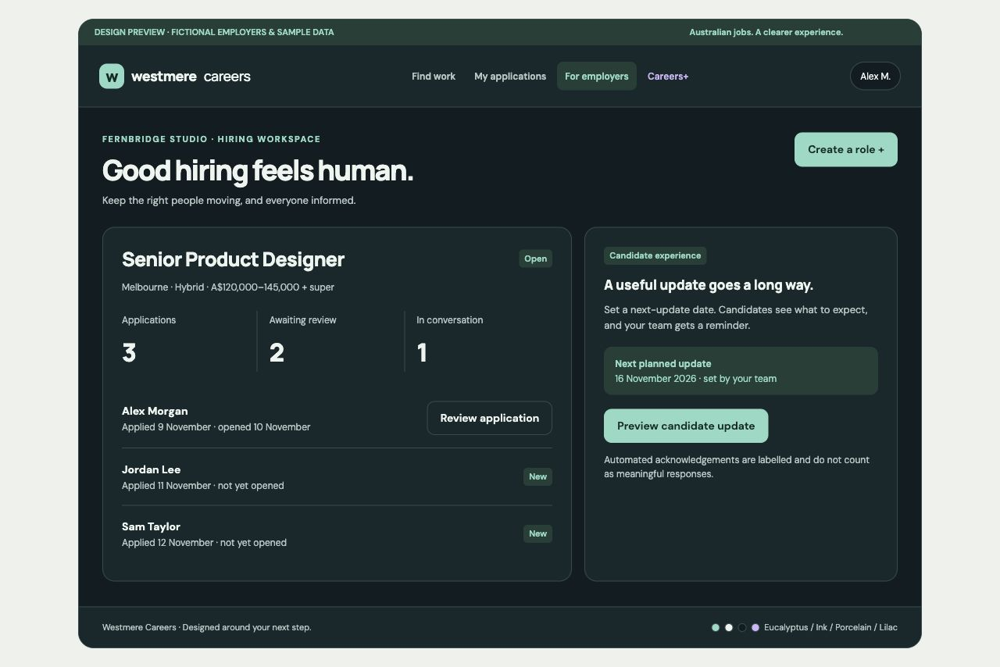

A production plan for Westmere Careers: an Australian employment marketplace that helps candidates choose confidently and employers hire with care.
Lead with salary clarity, useful search, accountable application handling and candid employer response insights. Give the core service broad access; earn Careers+ subscriptions through practical preparation tools.
Launch nationally accessible, but establish supply and demand in Melbourne first. Start with design, technology, customer success and business operations at small and medium businesses and selected agencies. This is a proposed starting hypothesis, to validate with customers.
Application Studio, interview rehearsal and an expanded search workspace. Show a useful preview before asking for payment.
Total consumer price; GST included if applicable. Monthly renewal, online cancellation. Proposed allowances are explicit below.This is a ready-to-execute proposal and an interactive design concept, not a completed production application. Product choices and estimates below are recommendations. Research was reviewed on 12 November 2026. No hosted resources, live prices or production data have been changed.
Positioning: “Find your next role with a clearer picture of the work, the pay and the people hiring.” The experience should feel calm, capable and welcoming. Search should be useful before account creation; registration should occur when a person saves, applies or chooses personalised tools.
| Market baseline | Evidence | Westmere’s proposed advantage |
|---|---|---|
| SEEK provides application activity updates. | SEEK documents viewed notifications and candidate-management updates. Source | A complete, timestamped application history and a published methodology for employer response reports. Viewed status alone is not a novel feature. |
| Indeed also has application statuses. | Indeed distinguishes employer updates and platform statuses, generally for direct listings. Source | Make the difference between observed activity, candidate reports and unavailable information obvious throughout the product. |
| Jora combines aggregated and direct jobs. | Jora describes its aggregation model and free direct posting. Source | Curate fresh, structured listings and a strong direct application experience. Compete on relevance and trust before inventory size. |
These are feature comparisons, not a claim to have benchmarked every competitor’s speed or usability. Validate the proposed advantage through 8–12 candidate interviews, 5–8 employer interviews and usability sessions with actual Australian job searches.
Know what the role offers, apply without re-entering the same information, and understand what Westmere can tell you about progress.
Publish a clear role, manage applications efficiently, and make communicating with candidates part of the workflow.
Primary product outcome: completed applications that receive a meaningful employer response within 14 days. Track internal applications as a defined cohort; report external outcomes separately because Westmere cannot observe them reliably. Interviews and hires are valuable secondary outcomes, often candidate- or employer-reported.
A warm, editorial style gives Westmere a recognisable identity while keeping the application interface precise. Use generous space around decisions, stronger density inside search results, clear dividers, purposeful typography and a small number of consistent status treatments.
Typography: Manrope for a distinctive, friendly heading style; DM Sans for readable body text and controls. Self-host subset WOFF2 fonts in production. The concept’s “w” is a provisional wordmark, pending final brand design and trade mark checks.
| Screen | Proposed composition and behaviour |
|---|---|
| Discovery / search | A clear headline, prominent “What / Where” search, useful filters and salary-forward cards. Desktop split view lets people compare roles without losing their place. URL state preserves filters and browser navigation. |
| Job detail | Role, employer, location, working arrangement and pay appear before the long description. Show employer response evidence beside the company; mark external applications before the action. |
| Applications | A legible event timeline: received, opened, employer update and outcome. Give exact dates and explain what an opening means. External entries can hold personal notes with status unavailable. |
| Employer profile | Business details, hiring process, open jobs, candidate-reported response information and separately labelled recorded activity. Methodology is one click away. |
| Employer workspace | Role list, applicant pipeline, review tools and next-update reminders. Keep pay, dates, open tasks and candidate communication visible. |
| Careers+ | A quieter lilac identity. Show the user’s draft, proposed improvement and truthful rationale. Price and allowance remain visible near subscription actions. |
| Mobile | One-column job cards, a full job page with preserved search state, filter sheet and accessible apply bar. Respect safe areas, keyboard visibility and zoom. Essential information remains available without hovering. |
Motion: short 120–180 ms changes for save confirmation and panel transitions; respect reduced-motion settings. Avoid animated hero media and layout shifts. Add dark appearance through dedicated contrast-tested tokens. Status always has a text label alongside its colour.

| Area | Production release requirement | Later expansion |
|---|---|---|
| Public discovery | Search, Australian locations and radius, role category, salary, pay period, work arrangement, employment type, date posted, direct/external filter, accessible pagination and useful empty states. | Commute estimates, richer skill taxonomy and optional semantic discovery. |
| Job pages | Structured salary with base/package and super distinction; minimum and maximum; hours and casual loading notes where relevant; role duties, requirements, employer identity, expiry, report action and application route. | Rich employer storytelling and optional video with captions. |
| Candidate account | Email authentication, profile, private CV versions, saved roles and searches, opt-in daily/weekly email alerts, consent settings, data export and deletion request flow. | Additional social sign-in, passkeys when suitable and push alerts. |
| Direct application | CV/cover letter, employer questions, draft saving, application preview, explicit submission, receipt and duplicate prevention. Freeze submitted document versions so later edits do not change an existing application. | Reusable structured selection criteria and scheduled interview integrations. |
| Application workspace | Observed timeline, employer messages, candidate notes, withdrawal, external application notes and report-your-experience prompts. | Calendar integrations and advanced organisation tools. |
| Employer accounts | Organisation ownership checks, team membership and roles, job wizard, draft/preview/publish/close, candidate review, stages, messages, next-update dates and closure communication. | ATS connectors, SSO, multi-brand administration and bulk feeds. |
| Trust and safety | Company profiles, structured candidate reports, moderation, employer appeals, scam reporting, suspicious listing review and an audit trail. | Carefully moderated narrative reviews after operational capacity exists. |
| Careers+ | Paid preparation tools, a useful free sample, documented monthly limits, billing portal and entitlement lifecycle. | Optional voice interviews and richer salary research if data rights and demand support them. |
| Platform operations | Admin console, failed-job queues, monitoring, backups, restoration runbook, support tools, analytics, policies and deployment pipeline. | Dedicated enterprise analytics and regional expansion. |
Salary disclosure is a proposed Westmere policy for direct listings, not a claim that every Australian job ad must disclose a range. Prefer clear published pay over hidden salary bands. Do not manufacture salary estimates from sparse data. External salary information is labelled as employer-supplied, missing or estimated with an identifiable source.
Route map: /, /jobs, /jobs/[slug-id], /companies/[slug], /careers-plus, /me/profile, /me/saved, /me/applications, /me/studio, /employers, /hire/[organisation]/jobs, /hire/[organisation]/applications, /settings/billing and protected /admin.
An internal application is one submitted through Westmere. Store server-side events with an actor, source and UTC timestamp; display the candidate’s selected Australian time zone and an exact local date. “Opened” means an authorised hiring team member intentionally opened the application view. Background fetches, list previews, bots and admin moderation do not count. Debounce repeat opens, preserve the first-open time and keep a private audit trail.
Do not claim a CV was read or understood. A document download is a distinct event. Record an employer’s stage change separately from candidate notification delivery. Email delivery does not prove the candidate read a message.
For external listings, say “Applied on employer website — activity unavailable”. A redirect click is not proof an application was submitted. Candidates may mark it submitted and report outcomes; any future ATS integration must identify its source and stale or failed synchronisation.
| Rule | Initial implementation specification |
|---|---|
| Report fields | Employer, job/application reference, application date, direct/external source, whether a meaningful response arrived, response date, outcome category and optional private evidence. One report per candidate/application with revision history. |
| Meaningful response | A direct contact, interview invitation, explicit rejection or individual application decision. An automated decision can qualify if it communicates an actual outcome and is labelled automated. Receipts, marketing, opens and generic “still processing” messages do not qualify. |
| Two months | Two calendar months from submission, preserving local date/time and clamping to the destination month’s last valid date. For example, 31 December reaches the boundary on 28 February, or 29 February in a leap year. “More than” requires the observation time to be strictly after the boundary. |
| Individual status | With a current candidate confirmation of no meaningful response beyond that boundary, show “No response reported after 2 months” on their own application. An old “no reply” report is not silently assumed still current. Require a no-response confirmation within the last 30 days for public aggregation; keep stale reports as historical private records. |
| Public cohort | Default to applications submitted between three and six calendar months before the snapshot date, across all applications solicited for reporting. This provides a consistent mature cohort. Show the cohort dates, report count and freshness. Newer experiences can be shown privately and will mature into the public cohort. |
| Public label | Show “Unresponsive · candidate reported” only with at least 10 unique eligible candidates and a majority (>50%) confirming no meaningful response more than two months after submission. Show the numerator/denominator beside it. Otherwise show measured counts, or “Not enough response data”. These are proposed policy thresholds for validation and legal review. |
| First-response time | Median calendar days to meaningful first response among reports with a response in that same cohort. State the responding sample, e.g. “5 days · 22 reports with a response”. Pair it with no-response counts so silence does not disappear from the picture. |
| Evidence tiers | Keep “Westmere recorded”, “candidate reported: direct application”, and “candidate reported: external application” distinct. An account check verifies an account, not the truth of an external application. Document checks and optional evidence improve confidence without making reports universally verified. |
| Aggregate safeguards | Suppress small public cohorts; use rounding or broader dates where identification is possible. Rate-limit, detect coordinated reporting, exclude duplicates and quarantined reports, recompute after corrections, and expire stale labels. |
Company and agency identity: attribute response handling to the advertiser or agency that actually manages the application. If an agency advertises for an undisclosed client, show the agency’s response history; do not assign its silence to an unverified end employer. Group branches only where ownership and handling processes justify it.
Late replies and missing reports: when a candidate records a later response, classify it as a late response and remove it from the current no-reply count; preserve its historical timing. Recompute public snapshots nightly and after accepted corrections. Never count an unanswered feedback request as evidence of employer silence. Show reporting coverage where Westmere knows the eligible application count, and explicitly describe external-report selection bias.
Moderation: invite feedback from all eligible applicants, not just unsuccessful ones. Use structured reports initially; avoid publishing unreviewed allegations or personal names. Provide correction and appeal routes, with supporting evidence reviewed privately. Employers can respond to the methodology or dispute evidence, but cannot pay to delete valid reports. Publish pending-review status where needed. A sample describes reported experiences, not the whole applicant population.
The product promise is “prepare more clearly and stay organised”. Stronger outcomes are a hypothesis to measure; do not promise interviews, ATS passage or employment. Careers+ is a voluntary preparation subscription, separate from employers’ hiring decisions.
| Feature | Value the customer can recognise | Engineering specification |
|---|---|---|
| Application Studio | A role-requirements comparison, a tailored CV draft and cover letter based on the candidate’s actual experience. | Parse approved CV content, extract role requirements, cite source passages and identify missing evidence. Never invent qualifications, metrics or work rights. Show editable differences, require fact confirmation and generate accessible DOCX/PDF exports. 30 application packs per billing month. |
| Interview rehearsal | Practise specific role questions and improve STAR examples before an interview. | Text-based sessions grounded in the job and approved CV, a clear feedback rubric and saved notes. 10 sessions per billing month, up to 10 answer-feedback turns per session. Voice comes later. |
| Expanded workspace | Keep role comparisons, application versions and follow-up preparation in one place. | Saved comparison sets, private notes, application checklists, document version history and draft follow-ups. Candidate explicitly reviews and sends messages; no unattended auto-apply. |
| Personal search brief | A concise digest explaining which available roles match stated preferences. | Use the same eligible inventory and relevance rules as free search. Explain matching criteria, allow editing and distinguish an unknown requirement from a mismatch. No invented hiring probability or competitive applicant rank. |
Engagement principles: reduce uncertainty, make progress visible, preserve user control and show the next useful step. Use profile checklists that explain their benefit. Avoid application streaks, fabricated scarcity, countdowns, compulsive notifications and premium visibility advantages.
Select an AI provider after a short quality, privacy and Australian cost evaluation. No provider subscription or data residency is assumed. Use server-side calls, structured outputs, prompt versions and a fixed evaluation set of varied Australian roles and CVs. Treat CVs and job descriptions as untrusted input; document text cannot invoke tools or override instructions.
Keep generation off the search request path. Queue jobs durably, reserve a usage unit transactionally, process with retry and timeout controls, then settle or refund usage. Count completed outputs, show remaining allowance, and do not silently charge overages. Encrypt private files through the storage provider, redact unnecessary personal details from model inputs, obtain consent and review provider retention and training terms.
Benchmark hallucinated claims, factual accuracy, role relevance, readability and biased assumptions before release. AI assists the candidate’s writing; Westmere does not automatically select or reject applicants. If generation fails, keep existing drafts and return the usage credit.
The posting wizard collects business identity, job title, location, work arrangement, employment type, pay with super treatment, requirements, process steps, expiry and a realistic next-update date. Preview the exact candidate-facing card before publishing. Require re-confirmation before expiry extensions; show reposts honestly.
Review applications using role-related criteria, private team notes, clear stages and templated messages. Bulk actions require preview and confirmation. “Not proceeding” can create an explicit outcome message, clearly showing whether the message was sent automatically. Acknowledgements remain labelled and excluded from responsiveness calculations.
Verify organisation control through a work-domain email and business checks, with manual review where needed. An ABN or domain alone is not proof the advertiser is legitimate. Show precisely what was checked. Prevent unsolicited CV harvesting: profiles and resumes are private by default; searchable talent profiles require separate, revocable candidate opt-in.
Offer selected verified businesses up to three concurrent direct roles free for 90 days, with onboarding support and feedback. Cap and monitor the pilot to control scams and operational load.
A 30-day listing, total advertised price including GST if applicable, with application management included. Treat this as a pricing hypothesis. Delay charging until the marketplace delivers credible applicant value.
Agency team plans and sponsorship can follow once there is demand. Sponsorship must be labelled and relevance-constrained; payment must not alter employer response reports. ATS feeds, APIs and external listings require permission or a licence. Do not rely on copying SEEK, Indeed or Jora inventory without an agreement.
Recommended: TypeScript, Next.js App Router and React, deployed on Vercel; Supabase Postgres, Auth and private Storage in Sydney; Stripe Checkout, Billing and Customer Portal. Use semantic HTML, a small token-based CSS system and accessible UI primitives. Pin supported stable versions at project kickoff and commit the lockfile.
There is no defensible universal “fastest language” for this product. Network distance, database design, caching and browser work will dominate many user-visible delays. Next.js offers server-rendered public pages and a strong fit with the requested hosting stack; keep interactive client components narrow. SvelteKit is a credible alternative to benchmark, but changing frameworks does not itself prove a faster end-to-end application. Rust can be added later for a measured CPU bottleneck.
Tauri and Electron package desktop applications. They do not provide the best initial delivery model for an indexable public jobs website. An installable web experience can follow; avoid caching private applications or CVs in offline service-worker caches. The referenced OrderWard architecture was not available for inspection and is not assumed.
| Decision | Implementation | Reason / limit |
|---|---|---|
| Rendering and caching | Render public job/company pages on the server. Cache only public projections with explicit expiry and invalidation on publish, edit and close. Keep authenticated responses and session-setting responses private. | Good first load and search visibility, while preventing one person’s data from entering another user’s cache. |
| Database locality | Select Supabase ap-southeast-2 and Vercel syd1 for database-heavy routes. Use a serverless-compatible pool for direct SQL. | Both platforms document Sydney support. Region choice reduces the physical distance between compute and data. It does not imply all vendors process everything in Australia. |
| Search | Start with indexed Postgres full-text search, normalised role titles and locations, typo-tolerance support where available, PostGIS radius filters and stable cursor pagination. Keep salary periods and package types explicit. | One source of truth and lower operational overhead. Validate indexes with query plans and a representative dataset before choosing a dedicated search engine. |
| Search scaling trigger | Consider a managed search index only when indexed queries cannot meet the p95 target at agreed traffic and data size, or product requirements exceed Postgres relevance quality. | A later index needs a durable change stream, deletions, versioned updates and rebuild tools. Never place private CVs in a public job index. |
| Async work | Use a Postgres-backed durable task queue plus scheduled, idempotent processors. Maintain a transactional outbox for application receipts and notifications. Give long tasks resumable checkpoints. | A process ending after a web request must not lose a receipt or entitlement change. Queue location and serverless time limits determine when a separate worker is needed. |
| External services | Add transactional email, an error-monitoring provider, malware scanning and an AI provider after account and data-processing review. | Supabase, Vercel and Stripe alone do not supply every production operational capability. These are explicit dependencies and cost items. |
Technical sources: Next.js rendering model, Supabase regions, Vercel regions, function placement and PostGIS.
| Domain | Core records and invariants |
|---|---|
| Identity | profiles, organisations, organisation_members, organisation_checks. Membership is authoritative; user-editable metadata never grants employer or admin permissions. |
| Marketplace | jobs, job_versions, locations, job_sources, saved_jobs, saved_searches. Validate salary bounds, source licences, publishing permissions, expiry and source identifiers. |
| Applications | applications, application_documents, application_answers, application_events, messages. Unique candidate/job submission with an explicit re-application rule. Submitted document references remain immutable. |
| Trust | response_reports, report_revisions, moderation_cases, employer_response_snapshots. Record evidence tier, eligible cohort, threshold version and recalculation time. |
| Commercial | billing_customers, subscriptions, entitlements, usage_ledger, stripe_events. External event IDs unique; only trusted server processes change billing state. |
| Operations | outbox, task_runs, notification_preferences, consent_events, audit_events. Audit privileged actions and delivery attempts without storing CV text in general logs. |
Access model: a candidate reads and edits their own profile and drafts, reads their submitted applications and views their private timeline. Employers access only applications for jobs within organisations where their current membership permits it. Public access is restricted to published, sanitised projections. A moderator has separately audited case access; a billing worker does not gain access to CVs by default.
Enforce row-level security on every exposed table and test grants as well as policies. Private schemas hold privileged operations; authorisation must also be checked in server actions and APIs. Use security_invoker views where exposed. Keep secret/service keys server-only. Inspect the actual Data API exposure settings; do not assume new tables are accessible or protected merely because a schema exists. Supabase RLS
Store CVs and evidence in private buckets with short-lived signed URLs issued after an access check. Limit file type and size, validate actual content, quarantine uploads for malware scanning and parse documents outside the request path. Use application snapshots or content-addressed immutable objects with access control. Remove or expire access after account deletion and membership removal according to the documented policy.
Enable MFA for administrators and privileged employer actions; secure cookies, token validation, CSRF/origin checks, input validation, output escaping, a strict content security policy, rate limits and abuse monitoring. Verify authorisation on object identifiers and signed-file generation. Revoked employer membership must be rechecked against the database on sensitive operations, rather than relying only on old JWT claims.
Before public beta, obtain qualified Australian review of the operating entity, Privacy Act applicability, collection notices, overseas disclosure, consent, marketing messages, consumer terms, discriminatory ads, reporting methodology and defamation exposure. Design to Australian Privacy Principle standards regardless of any assumed small-business exemption. A Sydney database is not a blanket Australian data-residency promise: review Stripe, email, logs, backups, support access and AI subprocessors.
Provide understandable collection notices before CV upload, separate optional public discoverability from applying, minimise sensitive fields and let people request access, correction, export and deletion. Proposed default: retain application materials for 12 months after a role closes, then delete or obtain a documented ongoing purpose; delete superseded draft CVs sooner. Validate the retention schedule with legal and operational needs. Financial records and legal holds follow their applicable requirements. Explain that employers may have lawfully retained copies already supplied to them.
Provide a breach-response process and evaluate notifiable-breach obligations. Do not ask candidates for passport, TFN or bank details during ordinary applications. Job advertising controls should flag suspect pay and discriminatory requirements, with human review. Platform validation is a safeguard, not a representation that an ad complies with every award. Sources: OAIC APP 8, APP 11, Fair Work job ads and recruitment discrimination guidance.
Define an AUD recurring Stripe price at 2,500 cents per month. The public consumer price is A$25 total, including GST if applicable; configure tax treatment with the business’s tax adviser. Do not add tax unexpectedly above the advertised A$25.
Release testing covers first payment, authentication-required payment, duplicate events, delayed renewal, failed payment, recovery, cancellation, re-subscription, refund, dispute and a changed billing-period boundary. Stripe webhook guidance
Clearly disclose recurring billing and cancellation. The free preview does not require a card or auto-convert. Monthly allowances reset on the customer’s billing cycle, not the first of the calendar month. Show remaining usage, unused-credit policy and failed-generation refunds. No pre-ticked consent or concealed annual commitment. ACCC subscription pricing and renewal example
| Area | Proposed acceptance target | How to verify |
|---|---|---|
| Core Web Vitals | Mobile and desktop p75: LCP ≤2.5 s, INP ≤200 ms, CLS ≤0.1. Aim for LCP ≤1.8 s on key public pages after optimisation. | Controlled mobile lab tests before launch; real-user monitoring after enough traffic exists. The 1.8-second goal is an internal stretch target, not a measured result. |
| Search | Server p95 ≤350 ms at a proposed initial 20 searches/second with 100,000 representative active jobs; filter results visible within about 700 ms on the nominated Australian test network. | Load test realistic query and facet distributions, warm/cold conditions and database plans. Revisit the traffic envelope once launch demand is known. |
| Browser payload | Initial search-route JavaScript target ≤180 KB compressed, including framework code; keep first-party non-image first-load transfer near 350 KB where feasible. | Bundle report and route budgets in CI. If a framework baseline prevents the target, document the cause and the measured user impact before relaxing it. |
| Core transactions | No duplicate applications, lost receipts or cross-account exposure. Application submit p95 ≤1 s excluding file upload under the agreed load. | Database constraints, idempotency and end-to-end tests including retries, network interruptions and queue failure. |
| Accessibility | Target WCAG 2.2 AA for critical flows, with keyboard access, visible focus, suitable contrast, labels, announced errors and comfortable touch targets. | Automated checks plus manual keyboard, screen-reader, 200–400% zoom and mobile review. Automated tools alone do not establish conformance. |
| Reliability | Initial internal service objective: 99.9% monthly availability for core browsing and application endpoints, excluding an explicitly defined maintenance policy. | Uptime monitoring, error budgets and incident review. This is an operating objective, not a contractual SLA or multi-region guarantee. |
Use server rendering, selective hydration, responsive images, reserved media dimensions, self-hosted fonts and lazy-loaded preparation tools. Cache public job information with bounded freshness and invalidate closed listings immediately. Avoid map libraries, trackers and large animation frameworks on the core search route.
Search ranking initially combines title/keyword relevance, structured preferences, location and listing freshness. Show reasons and allow sorting. Do not infer protected characteristics, rank by paid candidate status or silently demote candidates who decline AI tools. Give new employers a fair path without fabricating response history.
SEO includes stable job URLs, canonical rules, indexable job detail, XML sitemaps, Open Graph metadata and valid JobPosting structured data for eligible individual listings. Remove or update expired-job markup and notify supported indexing mechanisms. Keep private account pages out of search. Do not generate thousands of empty location pages or promise Google inclusion. Google guidance
Standards: Core Web Vitals thresholds and WCAG 2.2.
Use separate development, staging and production environments, independent secrets and Stripe test/live settings. Preview deployments use synthetic data and protected access. Test migrations on a staging copy with personal data removed. Keep production data out of local fixtures and logs.
In GitHub, protect main, require reviewed pull requests and CI, and work on codex/ feature branches. Keep source, migrations, tests, design tokens, environment-variable names, runbooks and architecture decisions in WestmereSystems/WestmereCareers. GitHub hosts the source and change history; Vercel serves the live application. Never commit credentials or CVs.
WestmereCareers/
src/app/ public, candidate, employer and admin routes
src/components/ accessible UI and design tokens
src/server/ authorisation, billing, search and task handlers
src/lib/ validated shared types and utilities
supabase/migrations/ versioned schema and policy changes
tests/ access controls, core flows and billing cases
docs/ architecture, product policy and runbooks
.github/workflows/ checks, migration validation and deployment gatesCI checks type safety, build integrity, critical business rules, cross-tenant isolation, upload policies, application idempotency, subscription lifecycle and key browser journeys. Add meaningful tests around risk; avoid UI snapshots that merely repeat implementation. Pin the CLI and runtime versions. Supabase’s current changelog includes CLI targeting and Data API changes, so migration automation must be validated against the installed version.
Monitor public route uptime, error rate, search latency, application failures, queue age, email bounce rate, webhook backlog, AI job cost and subscription discrepancies. Log correlation identifiers rather than personal document contents. Define notifications and name a response owner. Admin support should see only the information necessary to resolve a case.
Recovery: use database point-in-time recovery appropriate to the agreed budget and separately protect stored files. Supabase database backups do not substitute for file-content backups. Proposed pre-launch objectives: database RPO ≤15 minutes and RTO ≤4 hours; file RPO ≤24 hours and RTO ≤8 hours. These are targets to validate in a timed restore drill; confirm available plan capabilities and pricing. If the paid recovery option is deferred, document the increased loss window and do not claim the tighter objective.
Use additive, backwards-compatible migrations and expand/contract changes. Application rollback does not automatically roll back a destructive database migration. Keep a tested restoration procedure, webhook replay procedure, compromised employer response plan, support escalation route and data deletion runbook. Assign a platform owner, support/moderation owner and privacy contact before beta.
The most serious commercial risk is an empty or stale marketplace. Fast software cannot compensate for few relevant jobs or unresponsive advertisers. Concentrate initial recruitment on Melbourne businesses and selected agencies with real open roles; make the product available nationally without pretending to have equivalent coverage everywhere.
Core dashboard: fresh jobs by category/location, zero-result search rate, qualified applications per role, percentage of direct applications receiving a meaningful response within 14 days, median response among responders, candidate and employer satisfaction, employer repeat posting, premium conversion, refunds, cancellation and contribution margin. Publish no employer score until its sample rules are met.
Initial product hypotheses: candidates can locate a relevant role within two minutes in moderated tests; most can apply without help; and founding employers can review and respond using the workspace. Validate thresholds with customer research. Do not equate more applications with better hiring outcomes or treat career-search churn after a successful hire as product failure.
Indicative scope: two full-time engineers, part-time product design and QA, plus legal/security review and hands-on employer onboarding. The engineering baseline is approximately 960–1,280 hours across 12–16 weeks. This is a planning range, not a fixed quote or an autonomous build-time promise. Account access, content, integrations and feedback affect delivery; a solo build needs a longer revised plan.
| Phase | Indicative timing from approval | Concrete exit criteria |
|---|---|---|
| Discovery and design lock | Week 1 | Customer interviews scheduled; brand direction, cohort, paid feature scope, source access and data policy agreed. Clickable journeys reviewed with candidates and employers. |
| Secure foundation | Weeks 2–3 | GitHub/Vercel pipeline, isolated environments, Supabase schema, auth, organisation roles, private uploads and cross-account access tests pass. |
| Core marketplace | Weeks 4–6 | Publish/search/apply/review/respond/close works end to end. Application receipts and event history survive retries. Employer profile and report methodology implemented. |
| Careers+ and billing | Weeks 7–8 | Free sample, generation queue, document export, usage accounting, paid entitlements, cancellation and failure recovery verified in Stripe test mode. |
| Hardening | Weeks 9–10 | Security and accessibility review, search/load tests, restore drill, moderation workflow, policies, structured data and monitoring ready. |
| Closed beta | Weeks 11–12 | Real employers and candidates complete flows; severity-one/two defects resolved; supply and support capacity reviewed. Authorised small live billing verification completed. |
| Contingency and launch | Weeks 13–16 if needed | Resolve beta findings, demonstrate acceptance targets and release gradually with rollback, incident ownership and budget alerts in place. |
Production readiness is demonstrated by passing these gates; a polished preview or successful deployment does not establish it.
| Cost area | Current public baseline / planning allowance | Notes |
|---|---|---|
| Vercel | Pro starts at US$20/month, plus applicable usage and seats. | Existing subscription may cover the base. Confirm team, commercial usage, security and preview requirements. Pricing |
| Supabase | Pro starts at US$25/month; additional compute, projects and recovery options can add cost. | Budget separate staging and production capacity. Confirm recovery, backup and egress charges. Pricing |
| Payments and subscriptions | Stripe AU public domestic-card rate: 1.65% + A$0.30; Billing pay-as-you-go: 0.7% of Billing volume. | Model only; custom rates, overseas cards, currency conversion, tax on fees, refunds and disputes change actual costs. Payments · Billing |
| Low-traffic infrastructure | Planning reserve: US$100–350/month total before AI and transaction fees. | Includes base hosting/database and allowances for staging, email, monitoring, scanning and backups. This is an estimate, not vendor quotes; stronger recovery options may increase it. |
| AI | Initial internal cost target: no more than A$4/member/month averaged across the paid cohort. | Not a verified cost. Benchmark full allowance use, free-preview abuse, model rates, retries and exports before locking the product margins. |
| Human operations | Separate development, design, QA, support, moderation, acquisition and legal budgets required. | These can exceed infrastructure costs and are not included in the reserve above. Confirm rates and staffing before a delivery commitment. |
If GST-registered, A$25 inclusive of 10% GST gives approximately A$22.73 revenue excluding GST. At the public domestic-card and Billing rates, transaction costs are about A$0.89 before tax on fees. Subtract an assumed A$4 AI cost and A$1 variable service allocation: approximately A$16.84 contribution per paid month, before fixed operating costs, support, acquisition, refunds and income tax. These are modelling assumptions, not a profit forecast.
GST background: Australian Government guidance. Confirm registration and the actual tax treatment for the operating business before setting up live billing.
At 100 paying members, that model produces A$2,500 gross monthly billings and roughly A$1,684 contribution before fixed costs. At 500, gross billings are A$12,500 and modelled contribution is about A$8,420. The calculation does not establish demand, conversion or retention. If not GST-registered, revenue treatment differs; an adviser should confirm the correct setup.
For example, an assumed A$1,000/month in fixed operating costs would require about 60 paid member-months at A$16.84 contribution to cover those costs alone. Acquisition and development recovery are additional. Successful job searches naturally create subscription churn, so employer revenue and a continuing supply of new active searchers matter.
WestmereSystems/WestmereCareers as the source of truth.Approval of this proposal can begin repository scaffolding, design-system implementation and a staging milestone. Paid resources, real candidate data, live billing and public launch require the relevant credentials, explicit scope and completion of the stated gates. No production rollout is implied by this document.
First implementation milestone: verified repository checkout, architecture decision record, reproducible Next.js build, brand tokens, responsive search/job-detail screens with synthetic fixtures, CI and a protected Vercel preview. Demonstrate visual quality and basic performance before connecting production services.
Accessed 12 November 2026. Product design, thresholds, staffing and cost allowances are proposals; cited sources substantiate the specific platform or regulatory facts, not the business forecasts.